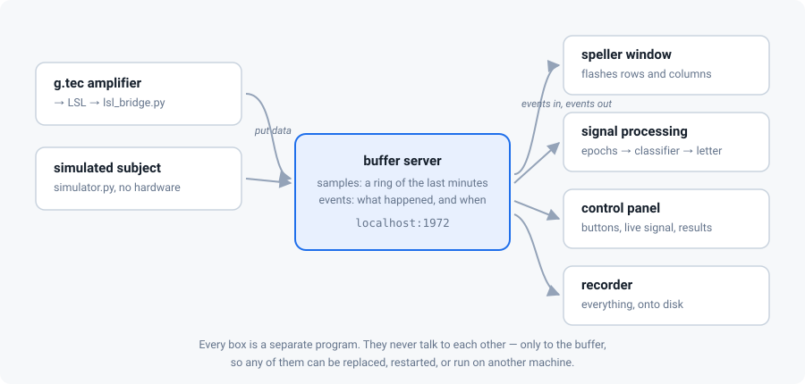

The client–server design
One buffer in the middle, several small programs around it. This is how real BCI systems are built, and why.
A BCI has to do several things at once: read an amplifier without ever missing a sample, put flashes on a screen with steady timing, cut and classify data, and let an operator drive the session. Doing all of that in one program means one slow step stalls everything.
buffer_bci's answer, which this software follows, is to split the job into independent clients around a central data store.

The buffer
The buffer server is a small network service that holds two things:
- samples — a ring holding the last few minutes of EEG, numbered from the start of the session;
- events — a list of things that happened, each stamped with the sample number it happened at.
Clients connect over TCP and do exactly four kinds of thing: put samples, put events, get samples, get events (plus a blocking wait until something new arrives). That is the whole protocol.
It is the FieldTrip buffer protocol, the same one buffer_bci uses, so a MATLAB, Java or C client can talk to this python server and vice versa. There is a test in this repository that proves it, by driving our server with buffer_bci's own client code.
n … n + 0.6 × rate, no clock comparison and no drift between
machines. Wall-clock time appears only in the stimulus client, which decides
when to flash next.
The clients
| Client | Command | What it does |
|---|---|---|
| Acquisition | pyspeller lsl / pyspeller simulator |
Reads the amplifier (or invents data) and puts samples in the buffer |
| Stimulus | pyspeller speller |
Flashes rows and columns, writes an event for each flash |
| Signal processing | pyspeller sigproc |
Cuts epochs, trains the classifier, publishes the decoded letter |
| Control panel | pyspeller gui |
The operator's buttons and the live signal view |
| Recorder | pyspeller save |
Copies everything onto disk as it arrives |
pyspeller run starts all of them in one process for convenience, but they are
the same programs: you can run the amplifier on the recording machine, the
speller on the participant's screen, and the analysis on your laptop, by
pointing each at the buffer's address with --host.
How they coordinate: events
There is no command channel. Clients coordinate by writing events that the others read. This is the entire vocabulary:
| Event | Value | Written by | Meaning |
|---|---|---|---|
startPhase.cmd |
practice, calibrate, train, feedback, free, quit |
panel | run this phase now |
speller.ready |
stimulus, sigproc |
those clients | I am listening for commands |
stimulus.rowFlash / .colFlash |
index of the group | stimulus | this row/column just flashed |
stimulus.tgtFlash |
1 / 0 |
stimulus | that flash did/didn't contain the cued letter (calibration only) |
stimulus.sequence |
end |
stimulus | that letter's flashes are over |
stimulus.training |
start, end |
stimulus | a calibration block |
stimulus.feedback |
start, end |
stimulus | a spelling block |
classifier.prediction |
the symbol | analysis | the letter I decided on |
classifier.summary |
JSON | analysis | what training found (metrics, ERPs, confusion) |
sigproc.training |
done |
analysis | the classifier is fitted |
speller.control |
pause, resume, stop |
panel | hold or abandon the running block |
speller.edit |
DEL, CLR |
panel | correct the typed text |
simulation.target |
the symbol | stimulus | (simulator only) what the fake participant is attending to |
Two consequences worth understanding:
- Anything can drive the experiment. The control panel has no special
powers: it writes
startPhase.cmd. A script, a notebook, or a foot pedal could do the same. The tests drive whole sessions this way. - Anything can watch. Adding a new display, a logger, or your own online analysis means writing another client that reads events. Nothing else changes.
Talk to the buffer yourself
The fastest way to understand this is to poke it. Start a buffer and a simulated amplifier in one terminal each:
python -m pyspeller buffer
python -m pyspeller simulator
then, in python:
from pyspeller.buffer import BufferClient
client = BufferClient('localhost', 1972).connect()
header = client.wait_for_header()
print(header, header.labels)
# Header(nchannels=8, fsample=128, nsamples=3712, nevents=0, type=float32)
# ['Fz', 'Cz', 'Pz', 'Oz', 'P3', 'P4', 'C3', 'C4']
nsamples, nevents = client.poll() # what is in the buffer right now
data = client.get_data(nsamples - 128, nsamples - 1) # the last second
print(data.shape) # (128, 8) -- samples x channels
client.send_event('my.marker', 'hello') # stamped with the current sample
print(client.get_events()[-1]) # Event('my.marker', 'hello', sample=3809)
You have just done everything the framework does, by hand. The speller writes flash events; the analysis client reads them, asks for the samples after each one, and writes a prediction back.
Answers: (1) nothing — the recorder and the amplifier are separate clients and keep going; restart the analysis client and it picks up from the next event. (2) because they only share the buffer, and events carry sample numbers rather than wall-clock times. (3) in the analysis client, `pyspeller/speller/sigproc.py`, which is the only place that turns epochs into decisions.